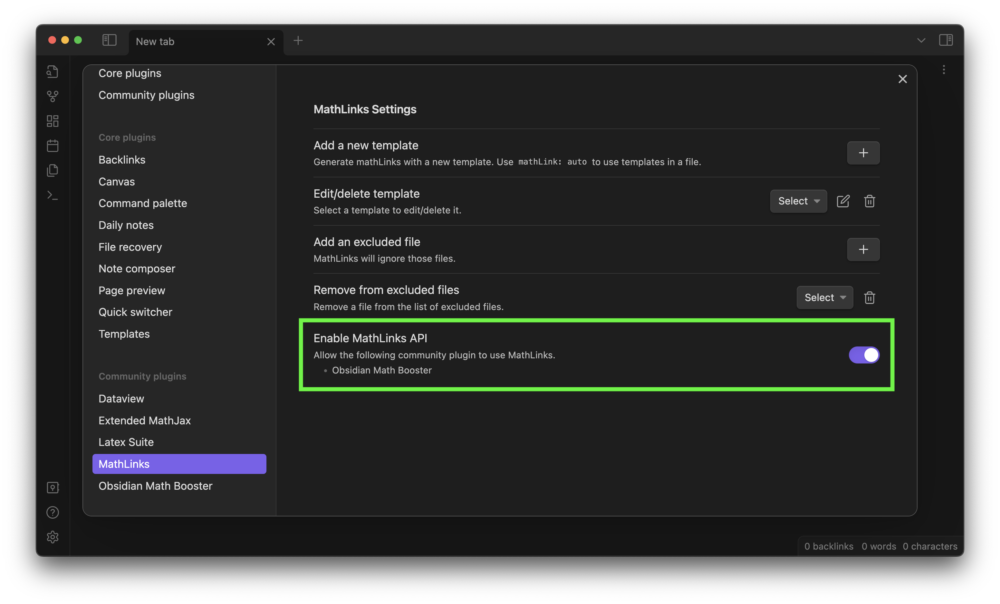

Overview

Tao, Terence, ed. An introduction to measure theory. Vol. 126. American Mathematical Soc., 2011.
Math Booster is an Obsidian.md plugin that enhances your mathematical note-taking experience with several powerful features, including:
- Special “math callouts” for theorems/definitions/exercises/…
- Automatic equation numbering
- Math live preview in callouts & blockquotes
Math callouts & equations can be referenced with their title or number similarly to the cleveref package in LaTeX.
You can also customize the appearance of math callous using CSS snippets. See the styles gallery for examples.
Installation
This plugin is before an official submission. You can choose between the following two methods for installation.
WARNING: The following instruction is for installing ver. 0.2.1, which is older than the unreleased latest version of this plugin that this documentation is written for.
Install via BRAT (recommended)
- Install the BRAT community plugin and enable it.
- Go to Options. In the Beta Plugin List section, click on the Add Beta plugin button.
- Copy and paste
https://github.com/RyotaUshio/obsidian-math-boosterin the pop-up prompt and click on Add Plugin. - (Optional) Turn on Auto-update plugins at startup at the top of the page.
- Go to Community plugins > Installed plugins. You will find “Math Booster” in the list. Click on the toggle button to enable it.
Manual installation
- Make a folder
<root of your vault>/.obsidian/plugins/obsidian-math-booster. - Visit the release page of the GitHub repository, and download
main.js,manifest.jsonandstyle.cssin the “Assets” section of the latest release. Put these files in the folder you made in the previous step. - Go to Obsidian’s Settings > Community plugins > Installed plugins. You will find “Math Booster” in the list (if not, make sure the restricted mode is turned off).
- Click on the toggle button to enable it.
Dependencies
The following community plugins are required to be installed and enabled.
Make sure Enable MathLinks API is turned on in the MathLinks plugin settings.
